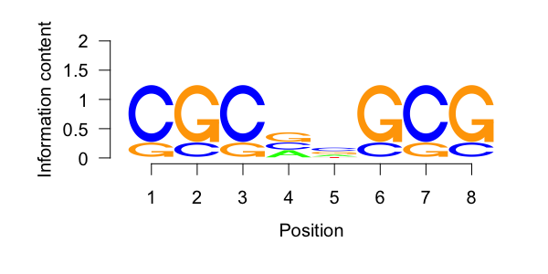
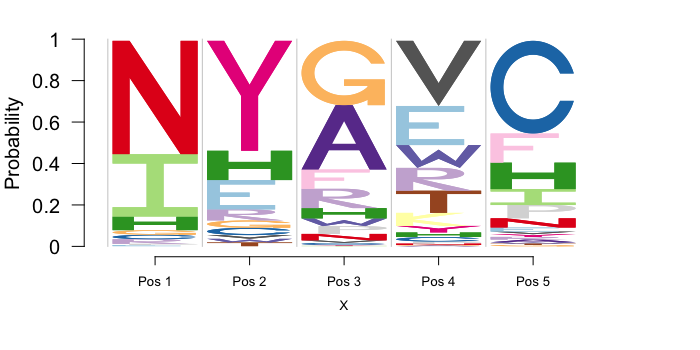
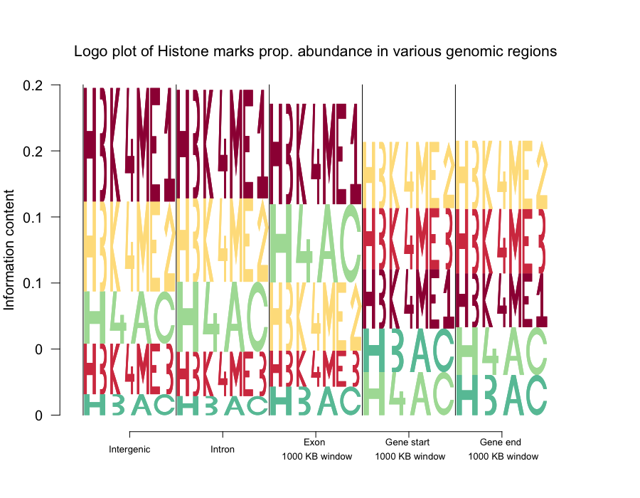
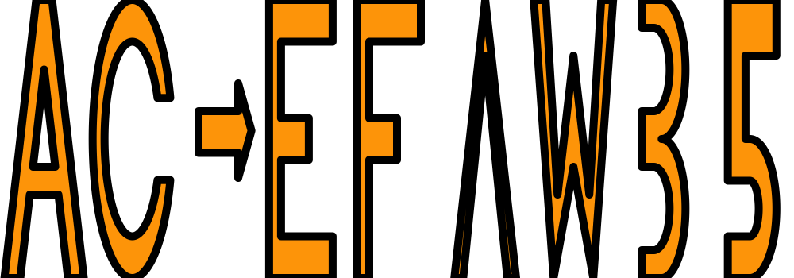

A R package for Flexible logo plotting device for alphanumeric English symbols.
Kushal K Dey, Matthew Stephens
Introduction
Logolas requires the CRAN-R packages grid, gridExtra and ggplot2. Also the package builds on the template set by the Bioconductor package seqLogo which was aimed at displaying A, C, G, T sequence logo motifs. In some sense, this package may be considered a more flexible extension of the ‘seqLogo’ package.
Installation
The package will be soon put on CRAN. As of now, you can install the developmental version from Github
library(devtools)
install_github('kkdey/Logolas')Then load the package with:
library(Logolas)Application of Logolas - sequence motif example
For sequence motif design problems, seqLogo is a standard package that is used and it is very easy to use. Here is an example from the vignette of the seqLogo package.
library(seqLogo)
mFile <- system.file("Exfiles/pwm1", package="seqLogo")
m <- read.table(mFile)
p <- makePWM(m)
seqLogo(p)
seqLogo uses the makePWM function to convert the matrix into a class “pwm” object by assigning the base information to the rows. To use our package, the user on the other hand would just need to set the row names to the base letters and the column names to the position index as follows. This would be more flexible when the user wants to play around with the order of the row names and change the column names.
mat <- m
rownames(mat) <- c("A", "C", "G", "T")
colnames(mat) <- 1:8
logomaker(mat,
cols= RColorBrewer::brewer.pal(dim(mat)[1],
name ="Spectral"),
frame_width = 1,
ic.scale = TRUE,
yscale_change=FALSE,
xlab="position")
Just as in seqLogo , Logolas too has an ic.scale option to determine if the heights of the bars should be same or should be determined by the information criterion.
logomaker(mat,
cols= RColorBrewer::brewer.pal(dim(mat)[1],
name ="Spectral"),
frame_width = 1,
ic.scale = FALSE,
yscale_change=FALSE,
xlab="position")
In addition, the user can use the yscale_change option which adjusts for the scale of Y axis as per data and blows up the logo plot, making it easier to visualize.
logomaker(mat,
cols= RColorBrewer::brewer.pal(dim(mat)[1],
name ="Spectral"),
frame_width = 1,
ic.scale = TRUE,
yscale_change=TRUE,
xlab="position")
Besides, Logolas also lets you play with the colors of the symbols, choose your own ic function that can be used to determine the heights of the stacks, set titles, x-labels, y-labels and axis names as per the user choice and also choose the relative width of each column in the logo stack, the kind of flexibility one does not get with seqLogo package.
seqLogo is constrained to only logos for $A$, $C$, $G$ and $T$, but Logolas has a much wider mix of symbols or logos, encompassing all English uppercase alphabets, numbers, punctuation marks and all combinations numbers, alphabets and punctuations. Additionally, it lets the user to set new symbols and add them to the mix. All this makes Logolas a pretty generic logo building tool that can be applied in many applications. A few of those applications are provided below.
Application of Logolas - protein motif example
Our package is flexible to use on protein motif data as well. For protein motifs, insead of base symbols, we have symbols for $20$ amino acids, each of which is assigned one English alphabet. A demo example of that is provided below.
counts_mat <- rbind(c(0, 0, 100, 1, 2),
c(4, 3, 30, 35, 2),
c(100, 0, 10, 2, 7),
rep(0,5),
c(4, 2, 3, 7, 70),
c(1, 8, 0, 60, 3),
rep(0, 5),
c(4, 2, 100, 1, 1),
c(12, 8, 16, 7, 20),
c(55, 0, 1, 0, 12),
rep(0,5),
c(rep(0,3), 20, 0),
rep(0,5),
c(0, 0, 30, 0, 22),
c(1, 0, 12, 3, 10),
rep(0,5),
c(0, 1, 0, 34, 1),
c(0, 1, 12, 35, 1),
c(0, 30, 1, 10, 2),
c(0, 1, 4, 100, 2))
rownames(counts_mat) <- c("A", "R", "N", "D",
"C", "E", "Q", "G",
"H", "I", "L", "K",
"M", "F", "P", "S",
"T", "W", "Y", "V")
colnames(counts_mat) <- c("Pos 1", "Pos 2", "Pos 3", "Pos 4", "Pos 5")
cols1 <- c(rev(RColorBrewer::brewer.pal(12, "Paired"))[c(3,4,7,8,11,12,5,6,9,10)],
RColorBrewer::brewer.pal(12, "Set3")[c(1,2,5,8,9)],
RColorBrewer::brewer.pal(9, "Set1")[c(9,7)],
RColorBrewer::brewer.pal(8, "Dark2")[c(3,4,8)])
We then build the logo plots on this counts data.
logomaker(counts_mat,
cols= cols1,
frame_width = 1,
ic.scale = FALSE,
yscale_change = FALSE)
Application of Logolas - arXiv category logo
Suppose we want to build a logo plot of the field categories of manuscipts submitted by authors on aRxiv. Here is a demo example on 4 Professors from Statistics department, University of Chicago where I come from. Note here the field categories are a combination of numbers and alphabets and not just a single alphabet as in the examples above. Logolas can be easily used even in such cases, with the same syntax structure as before.
We generate the counts data of number of publications for each category for each of the 4 Professors (representing column blocks here).
library(aRxiv)
rec1 <- arxiv_search('au:"Matthew Stephens"', limit=50)
rec2 <- arxiv_search('au:"John Lafferty"', limit=50)
rec3 <- arxiv_search('au:"Wei Biao Wu"', limit=50)
rec4 <- arxiv_search('au:"Peter Mccullagh"', limit=50)
primary_categories_1 <- toupper(rec1$primary_category)
primary_categories_2 <- toupper(rec2$primary_category)
primary_categories_3 <- toupper(rec3$primary_category)
primary_categories_4 <- toupper(rec4$primary_category)
factor_levels <- unique(c(unique(primary_categories_1),
unique(primary_categories_2),
unique(primary_categories_3),
unique(primary_categories_4)))
primary_categories_1 <- factor(primary_categories_1, levels=factor_levels)
primary_categories_2 <- factor(primary_categories_2, levels=factor_levels)
primary_categories_3 <- factor(primary_categories_3, levels=factor_levels)
primary_categories_4 <- factor(primary_categories_4, levels=factor_levels)
tab_data <- cbind(table(primary_categories_1),
table(primary_categories_2),
table(primary_categories_3),
table(primary_categories_4))
colnames(tab_data) <- c("Matthew Stephens",
"John Lafferty",
"Wei Biao Wu",
"Peter McCullagh")
tab_data <- as.matrix(tab_data)We apply the logomaker function to plot the logo plots.
logomaker(tab_data,
cols= RColorBrewer::brewer.pal(dim(tab_data)[1],
name = "Spectral"),
frame_width = 1,
ic.scale = TRUE,
pop_name = "arXiv field categories of UChicago STAT professors",
xlab = "Professors",
ylab = "Information content")

logomaker(tab_data,
cols= RColorBrewer::brewer.pal(dim(tab_data)[1],
name = "Spectral"),
frame_width = 1,
ic.scale = FALSE,
pop_name = "arXiv field categories of UChicago STAT professors",
xlab = "Professors",
ylab = "Information content")

Application of Logolas - mutational profile
Sometimes a symbol or logo might be even more complex. For example, one may want to represent mutational profile as a logo plot, with the base substitution at the center and the flanking base information to the left and right of the substitution. For the substitution, one may want to use symbols like $ C -> T$ etc. Logolas is flexible enough to mix symbols with arrow signs (among other signs) and it is very easy to define the logo as $C>T$, $A>G$ etc and $>$ is interpreted as a right arrow (Similarly $<$ is interpreted as left arrow). Check the example below
library(seqLogo)
mFile <- system.file("Exfiles/pwm1", package="seqLogo")
m <- read.table(mFile)
p <- makePWM(m)
mat1 <- cbind(p@pwm[,c(3,4)], rep(0,4), p@pwm[,c(5,6)]);
colnames(mat1) <- c("-2", "-1", "0", "1", "2")
mat2 <- cbind(rep(0,6), rep(0,6),
c(0.5, 0.2, 0.2, 0.05, 0.05, 0),
rep(0,6), rep(0,6))
rownames(mat2) <- c("C>T", "C>A", "C>G",
"T>A", "T>C", "T>G")
table <- rbind(mat1, mat2)Now we apply Logolas to build the mutational logo plot.
logomaker(table,
cols= rev(RColorBrewer::brewer.pal(dim(table)[1],
name = "Spectral")),
frame_width = 1,
ic.scale = TRUE,
yscale_change=TRUE,
xlab = "Position",
ylab = "Information content")

Application of Logolas - histone marks
In studies related to histone marks, one might be interested to see if certain histone marks are prominent than others in some cell lines or tissues or in some genomic regions. In this case, we apply Logolas on an example data from Koch et al (2007) [Supp Table 2 of that paper]. The authors recorded number of histone modification sites identified by the HMM which overlap with an intergenic sequence, intron, exon, gene start and gene end for the lymphoblastoid cell line, GM06990, in the ChIP-CHIP data. Logolas provides a handy visualization to see how the patterns of histone modification sites changes across genomic region types for that cell line.
First we input the data from Supp Table 2 due to Koch et al (2007).
mat <- rbind(c(326, 296, 81, 245, 71),
c(258, 228, 55, 273, 90),
c(145, 121, 29, 253, 85),
c(60, 52, 23, 180, 53),
c(150, 191, 63, 178, 63))
rownames(mat) <- c("H3K4ME1", "H3K4ME2", "H3K4ME3", "H3AC", "H4AC")
colnames(mat) <- c("Intergenic",
"Intron",
"Exon \n 1000 KB window",
"Gene start \n 1000 KB window",
"Gene end \n 1000 KB window")
Now we apply Logolas on this matrix.
logomaker(mat,
cols= sample(RColorBrewer::brewer.pal(10,name = "Spectral"), dim(mat)[1]),
frame_width = 1,
ic.scale = TRUE,
pop_name = "Histone marks prop. abundance in various genomic regions",
xlab = "",
ylab = "Information content",
yscale_change = TRUE,
col_line_split = "black")
Make your own logo
The biggest advantage of using this package is that an user can build his own atom logos (symbols, letters, punctuation, number) and add it to the set of logos already available in the default version of the package.
For example, if one wants to have the symbol Lambda as part of his logo, he can create it as follows
LAMBDAletter <- function(colfill="green"){
x <- c(0.15, 0.5, 0.85, 0.75, 0.5, 0.25)
y <- c(0, 1, 0, 0, 0.8, 0)
fill <- colfill
id <- rep(1, length(x))
ll <- list("x"= x,
"y"= y,
"id" = id,
"fill" = fill)
return(ll)
}Do make sure, your function name is of the form *letter" where you can be creative with the "*" part. Also make sure the name you put must be in uppercase letters. You can check if the symbol plot looks like a lambda or not.
lambda <- LAMBDAletter()
grid::grid.newpage()
grid::pushViewport(grid::viewport(x=0.5,y=0.5,width=1, height=1,
clip=TRUE))
grid::grid.polygon(lambda$x, lambda$y,
default.unit="native",
id=lambda$id,
gp=grid::gpar(fill=lambda$fill,
lwd=10))

Okay, once you are happy with the shape of the symbol, you can add it to the mix of all other symbols using the following command.
makemylogo("AC>EF/LAMBDA/W35",
addlogos="LAMBDA",
addlogos_text="LAMBDA",
plot=TRUE)
Note that we put lambda inside “/…/” to make sure that the function reads it as a new symbol and not general English alphabets or numbers. Once you run this, you should see the symbol as follows
This confirms that the symbol has been read into the mix, and now it can be used for stacking logo symbols under the logomaker() functionality.
counts_mat <- rbind(c(0, 10, 100, 60, 20),
c(40, 30, 30, 35, 20),
c(100, 0, 15, 25, 75),
c(10, 30, 20, 50, 70)
)
colnames(counts_mat) <- c("Pos 1", "Pos 2", "Pos 3", "Pos 4", "Pos 5")
rownames(counts_mat) <- c("R/LAMBDA/Q", "A", "X", "Y")
counts_matLAMBDA symbol is added under addlogos and addlogos_text options for the logomaker mix of symbols.
logomaker(counts_mat,
cols= RColorBrewer::brewer.pal(dim(counts_mat)[1],
name = "Spectral"),
frame_width = 1,
addlogos="LAMBDA",
addlogos_text="LAMBDA")

Contact
For any questions or comments, please contact kkdey@uchicago.edu
Acknowledgements
We would like to acknowledge Oliver Bembom, the author of seqLogo for acting as an inspiration and giving us the base through his awesome package, on which we developed this software.
We would also like to thank Kevin Luo, Hussein -al Asadi, John Blischak and Alex White for helpful discussions.
Links
- Browse source code at
https://github.com/kkdey/Logolas
License
GPL (>= 2)
Developers
- Kushal Dey
Author, maintainer